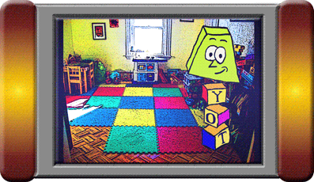

Finally, a toy that learns as much as it teaches.
Toybox is the new interactive toy from MECC. Kids will play with Yot and learn how to use everyday things, and at the same time, Yot and the Toybox will learn more about the person playing with it.
This website should help you learn what Toybox is all about, get to know Yot, and help get parents familiar with Toybox's advanced options to tailor the Toybox experience for their children.
Toybox features...
- Lots of options! Toybox gives you the freedom to shape your Play Room the way you want it. Move furniture, paint the walls, stick building blocks to the ceiling - and if you make a mess, cleaning it up is only a couple of touches away.
- Fun activities! Build houses and space ships, play memory games with cards, go for a race in a car or a boat!
- It learns who you are! Toybox (and Yot) are smart enough to get to know you by name, what you like, and what you need help with.
- Lots of options for parents, too! Toybox's extensive Parents Menu lets parents adjust everything, from updating and adding features, to switching options and activities on and off, or even giving Yot more things to say.
- It's also really affordable! We designed Toybox to have only the features it needs. It doesn't need expensive wireless networks or ultra-high-definition 3D graphics. It's not a next-gen video game or next year's big cell phone. With no need for any of that, Toybox is priced at a very affordable $60.